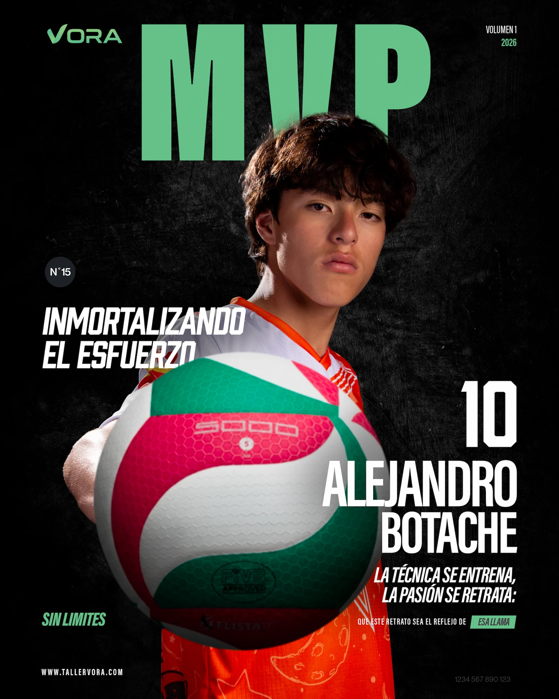

Mi comienzo en el volleyball

Algunas personas son deportistas por cuestión de salud o por pasión y en mi caso soy el primero, en una visita médica me recomendaron practicar deporte para mantenerme saludable y mejorar mi desarrollo por la adolescencia, practiqué fútbol, natación y basketball hasta llegar al voleibol.
Mi primer encuentro con él, fue cuando cursaba séptimo, en ese entonces era algo totalmente nuevo pero me pareció divertido jugaba a veces con amigos y cuando me dieron esa recomendación médica, lo tomé como una opción, uno de los deportes que podía escoger.
El voleibol a diferencia de algunos deportes es puramente cooperativo el movimiento de un único jugador define una reacción en cadena de otras acciones que termina en punto o no, se desafía tu habilidad física y mental como cualquier deporte y sobre todo tu habilidad para aportar y apoyar el equipo, además de mejorar tu propia actitud y habilidades.
¿Por qué menciono esto?, desde antes de aquella revisión médica que me recomendaba practicar deporte más seguido, como ya mencione practicaba otros deportes el problema fue la dificultad de estos, cuando jugaba con mis amigos fútbol usualmente solía ganarles con algo de facilidad, lo que generaba que no quisieran jugar conmigo y gente de mayor edad tenían mucho más nivel y por eso tampoco quisiera jugar conmigo, en el basket no mejore casi nada, apenas aprendí lo básico y no era muy bueno jugando, luego encontré un punto medio en el voleibol donde desde mi punto de vista mejore rapido, pero aun había gente a mi nivel y mejor, donde todos colaboran y te impulsan a mejorar más y tal vez en otro deporte hubiera sido igual pero termine más convencido del voleibol, sin embargo aun juego los deportes que me agradaron obviamente con menos nivel.
Hubo un tiempo en el que pensé dejar el voleibol por creer que no estaba al nivel del grupo, tanto en torneos como en entrenamientos comunes, esto lo note en un torneo en el cual no me desempeñe como me hubiera gustado, además de sentirte estancado en mi mejora que había notado rápida en un inicio y cada vez fue más difícil mejorar, sin embargo en vez de dejarlo aumente mis horas de entrenamiento e intente otros roles para ver con cual me acomodaba mejor, principalmente esto paso por la motivación que me dio mi círculo social que había conseguido en el deporte, además seguí practicando no solo por buscar mejorar sino por disfrutar con mis amigos nuevos del club.
El voleibol como cualquier otro deporte necesita fortaleza mental y bastante, para trabajar y mostrar tu habilidad bajo presión, es muy cooperativo, en mi experiencia dentro de un club he conocido a muchas personas, al fin y al cabo el deporte además de ser físico y mental puedes volverlo también algo social, encontrar personas con tus gustos, conocerlos a profundidad, crear amistades nuevas y salir a jugar. toda esa socialización, desafíos, cooperatividad, es lo que convierte el deporte en algo muy divertido

¿Qué te ha parecido este tema?
Cuéntanos tu opinión o dinos qué otros temas te gustaría que tratáramos en el blog. ¡Te leemos!